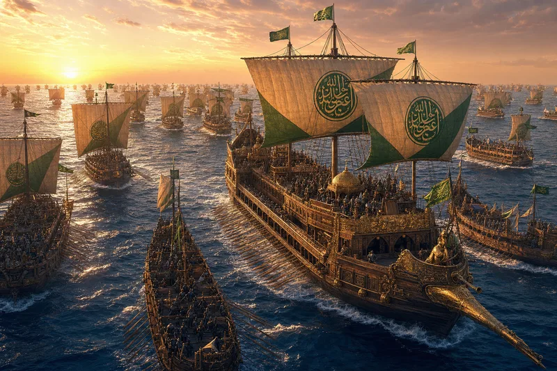
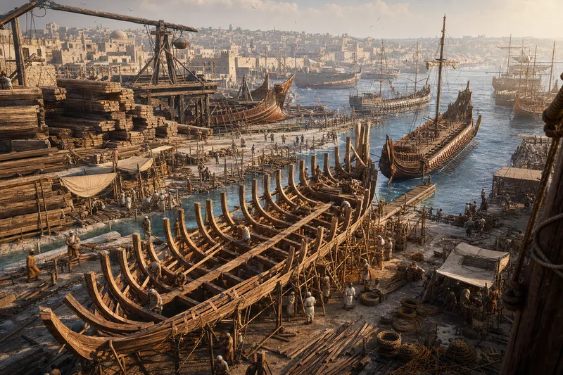
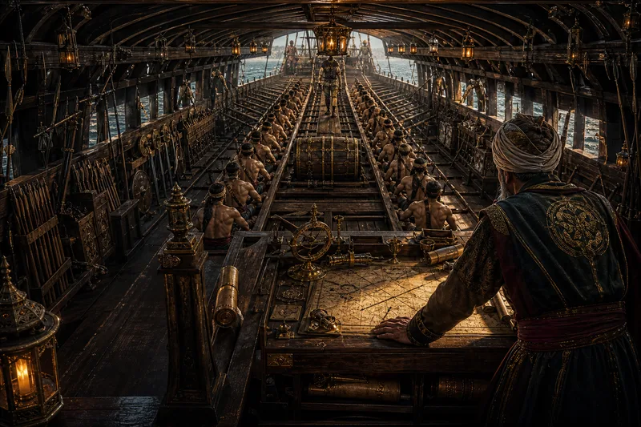
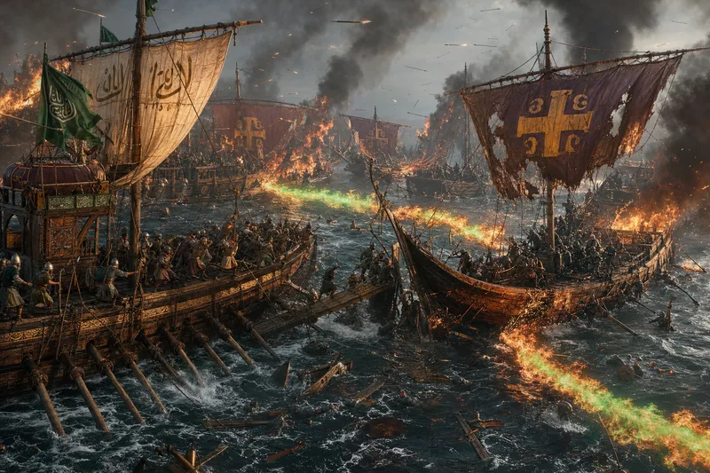
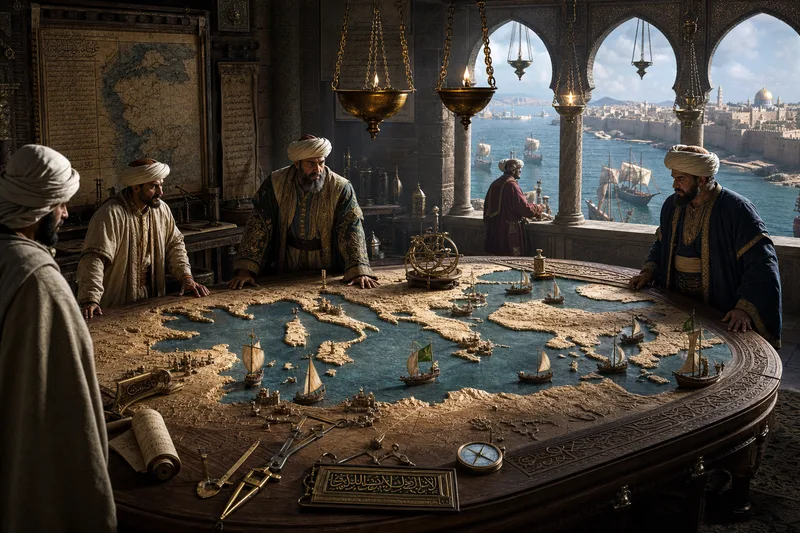
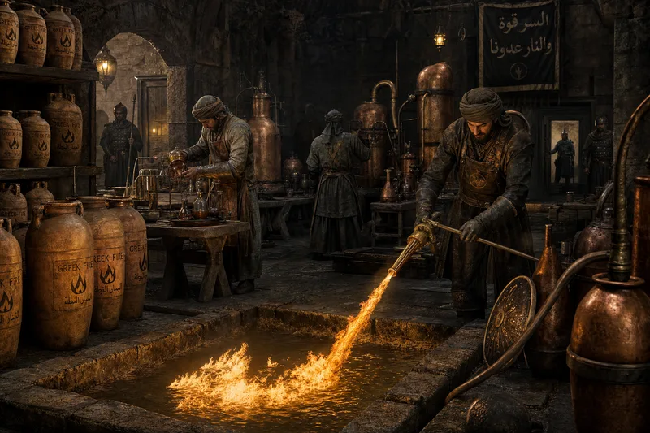

| FLAGSHIP — AL-BURAQ | Triple-masted dromon · 60m · 300 oarsmen · bronze ram · 12 Greek fire siphons |
| HEAVY GALLEYS | 200 vessels · 40m · 150 oarsmen · battering ram + boarding towers |
| LIGHT SCOUTS | 400 fast shalandi · 25m · single-masted · 50 oarsmen · pursuit and patrol |
| TRANSPORT FLEET | 600 cargo galleys · horses, siege engines, 10,000 troops per wave |
| FIRE SHIPS | Expendable · packed with naphtha and pitch · sailed unmanned into enemy formations |

| LOCATION | Acre · Tyre · Alexandria · Tunis — four yards building simultaneously |
| TIMBER | Lebanese cedar for hulls · Syrian oak for keels · Egyptian acacia for ribs |
| BUILD RATE | One war galley per 18 days · peak output: 100 ships/year |
| WORKFORCE | 4,000 shipwrights · 2,000 rope-makers · 800 sailmakers · 600 smiths |
| INNOVATION | Lateen sail — triangular rig allowing sailing closer to the wind than any Roman square rig |

| COMMAND DECK | Raised stern platform · navigation table · signal flags · horn array for fleet orders |
| OAR DECKS | Three tiers · 300 oarsmen · free men, not slaves — Mu'awiya's rule |
| WEAPONS | 12 Greek fire siphons · 40 archers on elevated platforms · javelin racks · grappling chains |
| CREW | 450 total: 300 oarsmen + 80 marines + 40 archers + 20 fire crews + 10 officers |
| SPEED | 7 knots under oar · 12 knots under full sail · ramming speed: 15 knots for 200m |

| DATE | 655 CE — Battle of the Masts (Dhat al-Sawari) |
| ENEMY | Byzantine Emperor Constans II — personally commanding — 500 ships |
| TACTIC | Lash ships together → turn naval combat into hand-to-hand boarding → Arab advantage |
| RESULT | Total Umayyad victory · Byzantine naval supremacy broken · Emperor fled disguised as a common sailor |
| CONSEQUENCE | Mediterranean opened · North Africa, Sicily, Cyprus, Rhodes — all within reach |

| THE MAP | Carved relief of entire Mediterranean · ship models mark fleet positions · updated daily by pigeon post |
| INTELLIGENCE | Network of merchant spies in every major port · coded messages in cargo manifests |
| STRATEGY | Seasonal campaigns: spring launch → summer combat → autumn resupply → winter refit |
| COMMUNICATIONS | Signal fires along the coast · carrier pigeons · fast scout shalandi relay ships |
| ADMIRALS | Abu al-A'war · Junada ibn Abi Umayya · the tradition Mu'awiya built from nothing |

| COMPOSITION | Secret — naphtha + quicklime + sulfur + pine resin + unknown catalyst. Recipe: 3 men, each knows 1/3. They have never met. |
| DELIVERY | Bronze siphons mounted on ship bows · pressurized copper tanks · range: 15m · burns on water |
| VARIANTS | Liquid (siphon-sprayed) · Ceramic grenades (hand-thrown) · Fire pots (catapult-launched) |
| SECURITY | Laboratory location changes yearly · workers are volunteers · families compensated if "incidents" |
| COUNTERMEASURE | None. Vinegar slows it. Sand contains it. Water feeds it. Best countermeasure: do not be near it. |